Houghton.Translate
"L'Après-midi d'un faune"
Labanotation: Anne Hutchinson Guest
Choreography: Vaslav Nijinsky
1-10
11-18
19-22
23-24
25-26
27-28
29
30
31
32-33
34
35-36
37-38
39-40
41-42
43-44
45-46
47-48
49-52
53-58
59-63
64-67
68-71
72-73
74-75
76-77
78-79
80-83
84-85
86-87
88-93
94-99
100-105
106-110
The tabs are searchable by measure.
The tabs are searchable by measure.
The tabs are searchable by measure.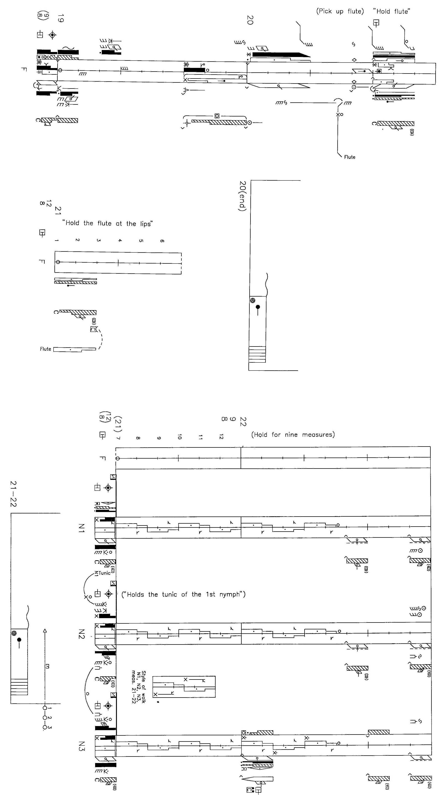
The tabs are searchable by measure.
The tabs are searchable by measure.
The tabs are searchable by measure.
The tabs are searchable by measure.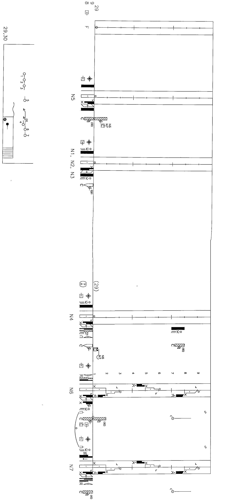
The tabs are searchable by measure.
The tabs are searchable by measure.
The tabs are searchable by measure.
The tabs are searchable by measure.
The tabs are searchable by measure.
The tabs are searchable by measure.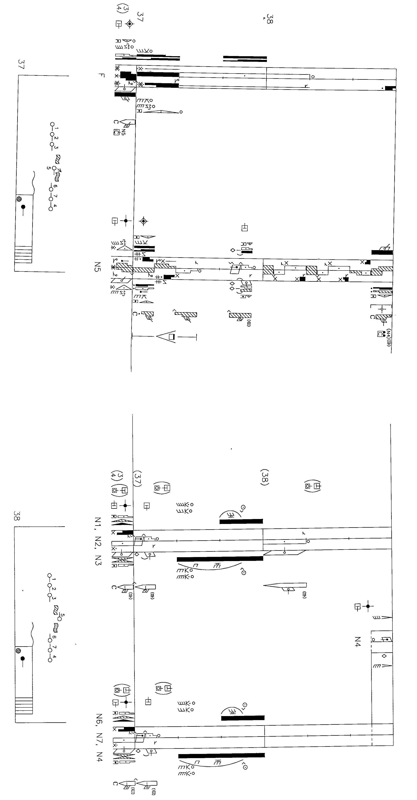
The tabs are searchable by measure.
The tabs are searchable by measure.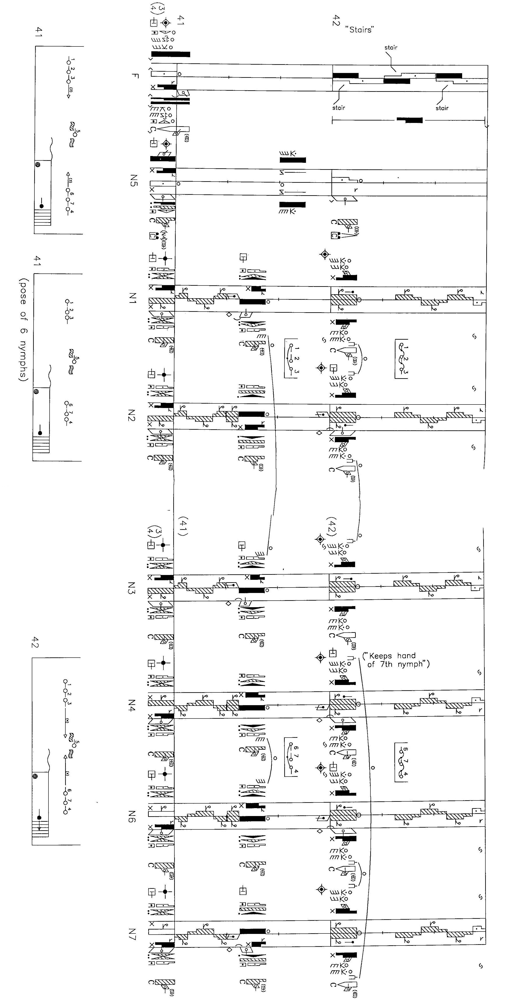
The tabs are searchable by measure.
The tabs are searchable by measure.
The tabs are searchable by measure.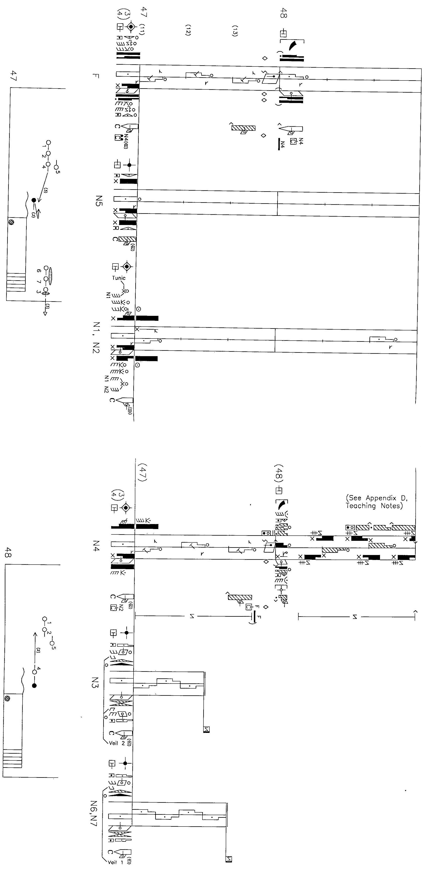
The tabs are searchable by measure.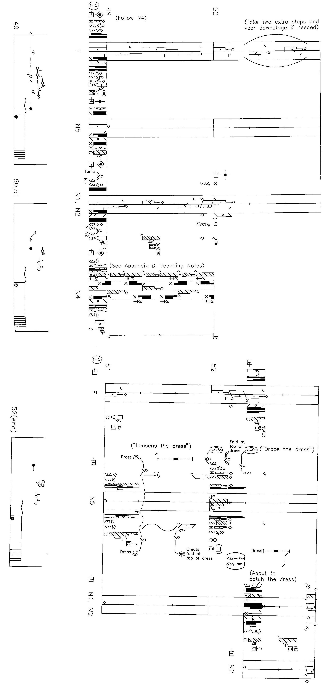
The tabs are searchable by measure.
The tabs are searchable by measure.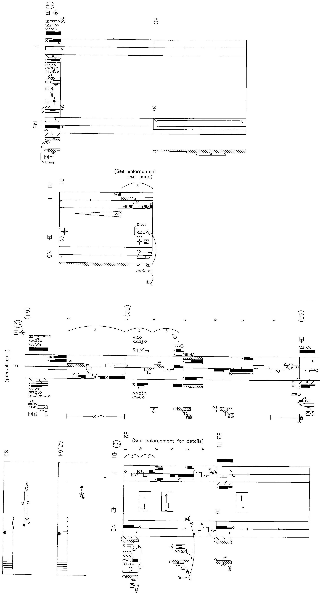
The tabs are searchable by measure.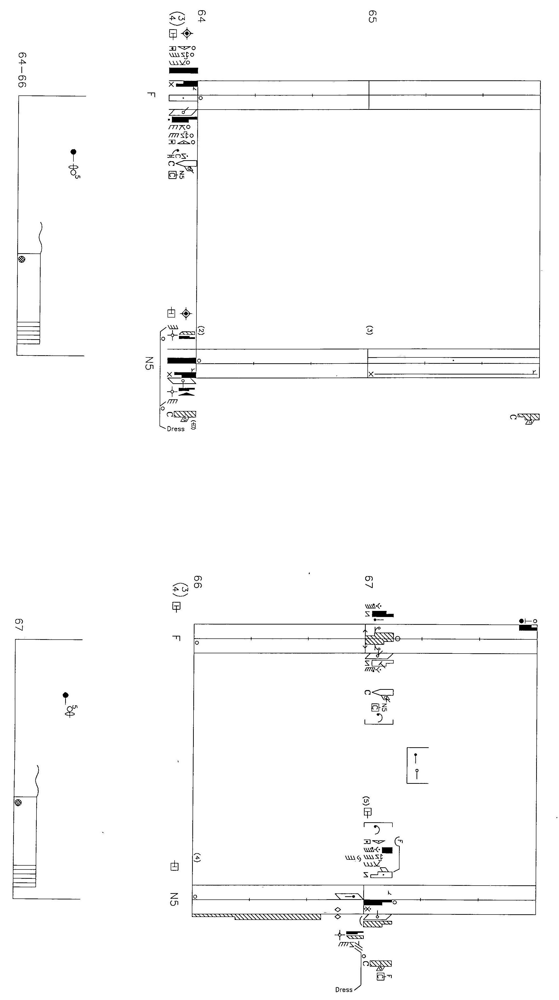
The tabs are searchable by measure.
The tabs are searchable by measure.
The tabs are searchable by measure.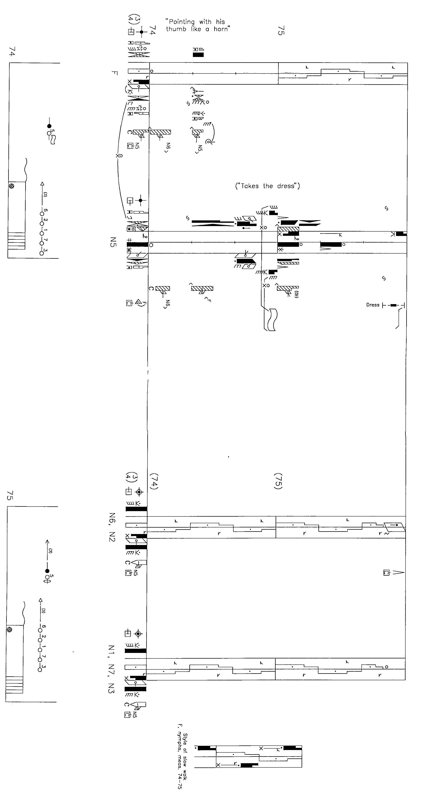
The tabs are searchable by measure.
The tabs are searchable by measure.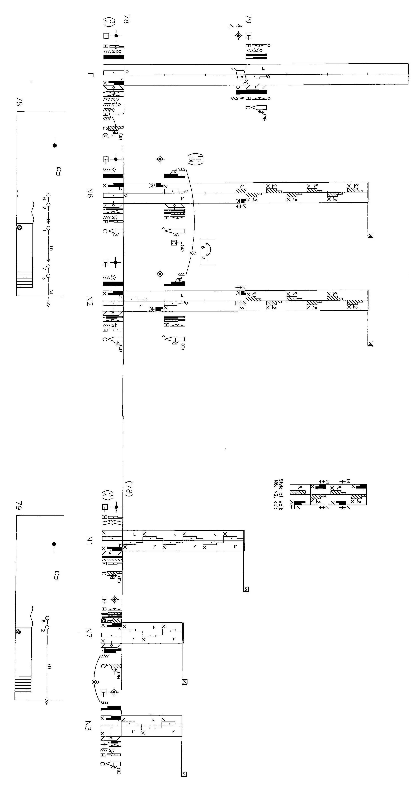
The tabs are searchable by measure.
The tabs are searchable by measure.
The tabs are searchable by measure.
The tabs are searchable by measure.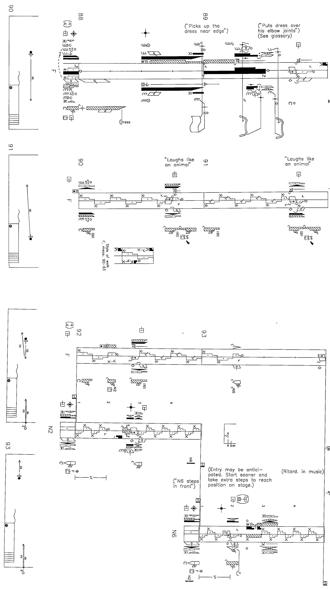
The tabs are searchable by measure.
The tabs are searchable by measure.
The tabs are searchable by measure.
"Prelude à l'après-midi d'un faune"
Performed by London Philharmonic
Score by Claude Debussy